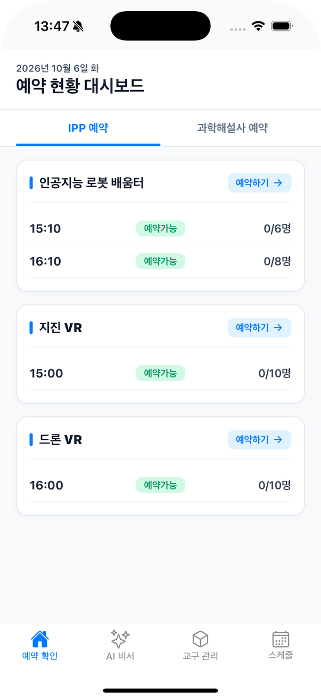
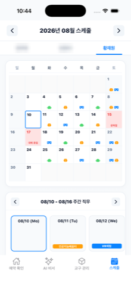
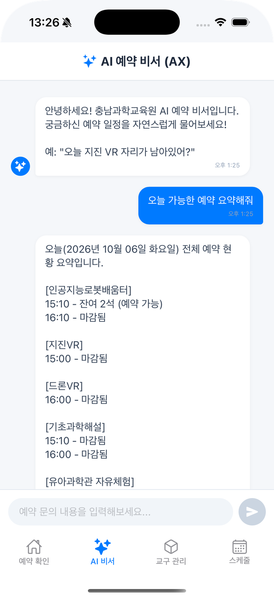
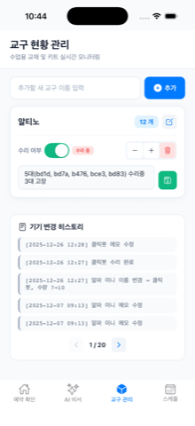

과학관 예약 통합 조회 앱
충청남도교육청 과학교육원 장기현장실습, 혼자 만들고 운영
실습생 3명과 과학해설사 7명, 모두 10명이 프로그램마다 흩어진 4~5개 예약 페이지를 돌며 수업을 확인했다. 예약은 오전 9시와 오후 1시에 열리고, 마감 직전까지 다시 봐야 했다. 나도 그 10명 중 한 명이었다.
그래서 예약 현황을 크롤링해 한 화면에 모으는 앱을 만들었다. 처음엔 내 불편만 풀려고 조회 기능만 넣었다. 매달 파일로 받던 근무표도 세 구역 자동 순환 배정과 근무 변경 기능으로 바꿨다.
- 혼자 쓰려고 조회 기능만 만들었다.
- 같이 쓰자는 실습생 2명이 붙어 3명, 이를 본 해설사 선생님들이 합류해 10명이 됐다.
- 전시관 공사로 예약 페이지 구조가 바뀐다는 소식을 한 달 전에 듣고 대비했다. 바뀐 당일엔 데이터를 받아오는 코드만 고쳤다.
- 실습이 끝난 뒤에도 유지보수를 이어가며 자연어로 묻는 AI 예약 비서를 붙였다.
- 지금도 10명이 쓰고 있다.




구성과 1년 뒤 고친 것 보기접기
구성
- React Native(Expo) 앱과 Node.js(Express) 서버. 서버가 운영 시간(09:00~18:59)에 10분마다 크롤링해 SQLite에 캐시한다.
- fly.io에 GitHub Actions로 자동 배포한다.
1년 뒤 내 코드를 다시 리뷰하고 고친 것
- CORS 전체 허용을 허용 목록으로 바꿨다.
- 챗봇 API에 분당 10회 제한을 걸고, 에러 응답에서 내부 메시지를 뺐다.
- 크론과 기동 시 크롤링이 겹치지 않게 동시 실행 락을 걸고, 크롤링이 실패하면 webhook으로 알린다.
- Firestore에 최소 권한 규칙을 배포하고, 근무표 화면의 로컬 캐시와 서버 동기화 경합을 고쳤다.
남은 한계
- SQLite에 볼륨이 없어 서버가 재시작되면 캐시가 비워진다. 기동 시 다시 크롤링해 복구되지만 전날 기록은 잃는다. README에 적어 두었다.
같은 실습에서 한 일: 소스 없는 전시물 되살리기
- 유아과학관 미각체험 전시물이 자주 멈췄다. 10년 전 Flash로 만들어졌고 원본 소스가 없었다.
- SWF를 디컴파일해 하드웨어 통신부의 메모리 누수를 찾아 고쳤고, 이후 Electron 키오스크로 다시 만들었다.
- 신호와 영상의 연결을 설정 파일로 빼서 코드를 고치지 않고도 바꿀 수 있게 했다.